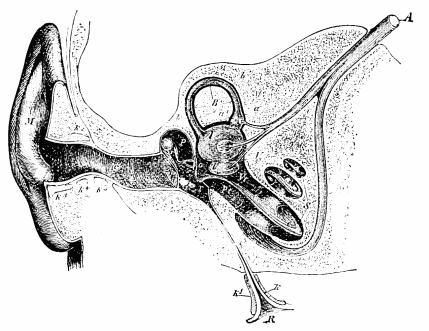
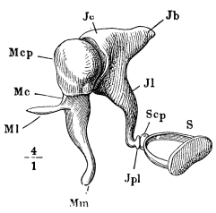
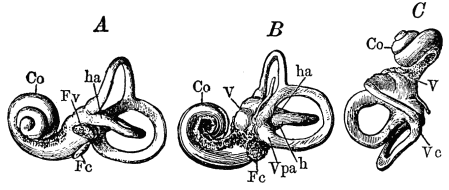
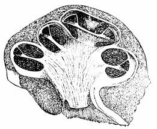
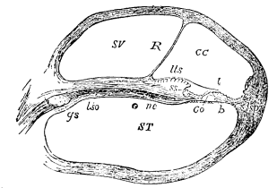
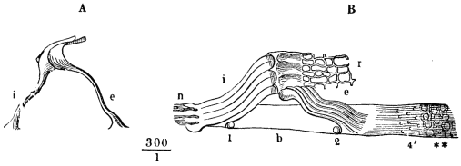
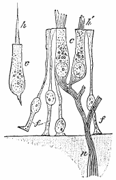

Chapter 4: Hearing¶
4.1 Hearing¶

The Ear.—"The auditory organ in man consists of three portions, known respectively as the external ear, the middle ear or tympanum, and the internal ear or labyrinth; the latter contains the end-organs of the auditory nerve. The external ear consists of the expansion seen on the exterior of the head, called the concha, M, Fig. 17, and a passage leading in from it, the external auditory meatus, G. This passage is closed at its inner end by the tympanic or drum membrane, T. It is lined by skin, through which numerous small glands, secreting the wax of the ear, open.

"The Tympanum (P, Fig. 17) is an irregular cavity in the temporal bone, closed externally by the drum membrane. From its inner side the Eustachian tube (R) proceeds and opens into the pharynx. The inner wall of the tympanum is bony except for two small apertures, the oval and round foramens, o and r, which lead into the labyrinth. During life the round aperture is closed by the lining mucous membrane, and the oval by the stirrup-bones. The tympanic membrane T, stretched across the outer side of the tympanum, forms a shallow funnel with its concavity outwards. It is pressed by the external air on its exterior, and by air entering the tympanic cavity through the Eustachian tube on its inner side. If the tympanum were closed these pressures would not be always equal when barometric pressure varied, and the membrane would be bulged in or out according as the external or internal pressure on it were the greater. On the other hand, were the Eustachian tube always open the sounds of our own voices would be loud and disconcerting, so it is usually closed; but every time we swallow it is opened, and thus the air-pressure in the cavity is kept equal to that in the external auditory meatus. On making a balloon ascent or going rapidly down a deep mine, the sudden and great change of aërial pressure outside frequently causes painful tension of the drum-membrane, which may be greatly alleviated by frequent swallowing.
The Auditory Ossicles.—Three small bones lie in the tympanum forming a chain from the drum-membrane to the oval foramen. The external bone is the malleus or hammer; the middle one, the incus or anvil; and the internal one, the stapes or stirrup. They are represented in Fig. 18.1
Accommodation is provided for in the ear as well as in the eye. One muscle an inch long, the tensor tympani, arises in the petrous portion of the temporal bone (running in a canal parallel to the Eustachian tube) and is inserted into the malleus below its head. When it contracts, it makes the membrane of the tympanum more tense. Another smaller muscle, the stapedius, goes to the head of the stirrup-bone. These muscles are by many persons felt distinctly contracting when certain notes are heard, and some can make them contract at will. In spite of this, uncertainty still reigns as to their exact use in hearing, though it is highly probable that they give to the membranes which they influence the degree of tension best suited to take up whatever rates of vibration may fall upon them at the time. In listening, the head and ears in lower animals, and the head alone in man, are turned so as best to receive the sound. This also is a part of the reaction called 'adaptation' of the organ (see the chapter on Attention).
The Internal Ear.—"The labyrinth consists primarily of chambers and tubes hollowed out in the temporal bone and inclosed by it on all sides, except for the oval and round foramens on its exterior, and certain apertures for blood-vessels and the auditory nerve; during life all these are closed water-tight in one way or another. Lying in the bony labyrinth thus constituted are membranous parts, of the same general form but smaller, so that between the two a space is left; this is filled with a watery fluid, called the perilymph; and the membranous internal ear is filled by a similar liquid, the endolymph.

The Bony Labyrinth.—"The bony labyrinth is described in three portions, the vestibule, the semicircular canals, and the cochlea; casts of its interior are represented from different aspects in Fig. 19. The vestibule is the central part and has on its exterior the oval foramen (Fv) into which the base of the stirrup-bone fits. Behind the vestibule are three bony semicircular canals, communicating with the back of the vestibule at each end, and dilated near one end to form an ampulla. The bony cochlea is a tube coiled on itself somewhat like a snail's shell, and lying in front of the vestibule.
The Membranous Labyrinth.—"The membranous vestibule, lying in the bony, consists of two sacs communicating by a narrow aperture. The posterior is called the utriculus, and into it the membranous semicircular canals open. The anterior, called the sacculus, communicates by a tube with the membranous cochlea. The membranous semicircular canals much resemble the bony, and each has


The membranous cochlea does not extend to the tip of the bony cochlea; above its apex the scala vestibuli and scala tympani communicate. Both are filled with perilymph, so that when the stapes is pushed into the oval foramen, o, in Fig. 17, by the impact of an air-wave on the tympanic membrane, a wave of perilymph runs up the scala vestibuli to the top, where it turns into the scala tympani, down whose whorls it runs and pushes out the round foramen r, ruffling probably the membrane of Reissner and the basilar membrane on its way up and down.

The Terminal Organs.—"The membranous cochlea contains certain solid structures seated on the basilar membrane and forming the organ of Corti. This contains the end-organs of the cochlear nerves. Lining the sulcus spiralis, a groove in the edge of the bony lamina spiralis, are cuboidal cells; on the inner margin of the basilar membrane they become columnar, and then are succeeded by a row which bear on their upper ends a set of short stiff hairs, and constitute the inner hair-cells, which are fixed below by a narrow apex to the basilar membrane; nerve-fibres enter them. To the inner hair-cells succeed the rods of Corti (Co, Fig. 21), which are represented highly magnified in Fig. 22. These rods are stiff and arranged side by side in two rows, leaned against one another by their upper ends so as to cover in a tunnel; they are known respectively as the inner and outer rods, the former being nearer the lamina spiralis. The inner rods are more numerous than the outer, the numbers being about 6000 and 4500 respectively. Attached to the external sides of the heads of the outer rods is the reticular membrane (r, Fig. 22), which is stiff and perforated by holes. External to the outer rods come four rows of outer hair-cells, connected like the inner row with nerve-fibres; their bristles project into the holes of the reticular membrane. Beyond the outer hair-cells is ordinary columnar epithelium, which passes gradually into cuboidal cells lining most of the membranous cochlea. From the upper lip of the sulcus spiralis projects the tectorial membrane (t, Fig. 21) which extends over the rods of Corti and the hair-cells."2

The hair-cells would thus seem to be the terminal organs for 'picking up' the vibrations which the air-waves communicate through all the intervening apparatus, solid and liquid, to the basilar membrane. Analogous hair-cells receive the terminal nerve-filaments in the walls of the saccule, utricle, and ampullæ (see Fig. 23).
The Various Qualities of Sound.—Physically, sounds consist of vibrations, and these are, generally speaking, aërial waves. When the waves are non-periodic the result is a noise; when periodic it is what is nowadays called a tone, or note. The loudness of a sound depends on the force of the waves. When they recur periodically a peculiar quality called pitch is the effect of their frequency. In addition to loudness and pitch tones have each their voice or timbre, which may differ widely in different instruments giving equally loud tones of the same pitch. This voice depends on the form of the aërial wave.
Pitch.—A single puff of air, set in motion by no matter what cause, will give a sensation of sound, but it takes at least four or five puffs, or more, to convey a sensation of pitch. The pitch of the note c, for instance, is due to 132 vibrations a second, that of its octave c´ is produced by twice as many, or 264 vibrations; but in neither case is it necessary for the vibrations to go on during a full second for the pitch to be discerned. "Sound vibrations may be too rapid or too slow in succession to produce sonorous sensations, just as the ultra-violet and ultra-red rays of the solar spectrum fail to excite the retina. The highest-pitched audible note answers to about 38,016 vibrations in a second, but it differs in individuals; many persons cannot hear the cry of a bat nor the chirp of a cricket, which lie near this upper audible limit. On the other hand, sounds of vibrational rate about 40 per second are not well heard, and a little below this they produce rather a 'hum' than a true tone-sensation, and are only used along with notes of higher octaves to which they give a character of greater depth."3
The entire system of pitches forms a continuum of one dimension; that is to say, you can pass from one pitch to another only by one set of intermediaries, instead of by more than one, as in the case of colors. (See p. 41.) The whole series of pitches is embraced in and between the terms of what is called the musical scale. The adoption of certain arbitrary points in this scale as 'notes' has an explanation partly historic and partly æsthetic, but too complex for exposition here.
The 'timbre' of a note is due to its wave-form. Waves are either simple ('pendular') or compound. Thus if a tuning-fork (which gives waves nearly simple) vibrate 132 times a second, we shall hear the note c. If simultaneously a fork of 264 vibrations be struck, giving the next higher octave, c´, the aërial movement at any time will be the algebraic sum of the movements due to both forks; whenever both drive the air one way they reinforce one another; when on the contrary the recoil of one fork coincides with the forward stroke of another, they detract from each other's effect. The result is a movement which is still periodic, repeating itself at equal intervals of time, but no longer pendular, since it is not alike on the ascending and descending limbs of the curves. We thus get at the fact that non-pendular vibrations may be produced by the fusion of pendular, or, in technical phrase, by their composition.
Suppose several musical instruments, as those of an orchestra, to be sounded together. Each produces its own effect on the air-particles, whose movements, being an algebraical sum, must at any given instant be very complex; yet the ear can pick out at will and follow the tones of any one instrument. Now in most musical instruments it is susceptible of physical proof that with every single note that is sounded many upper octaves and other 'harmonics' sound simultaneously in fainter form. On the relative strength of this or that one or more of these Helmholtz has shown that the instrument's peculiar voice depends. The several vowel-sounds in the human voice also depend on the predominance of diverse upper harmonics accompanying the note on which the vowel is sung. When the two tuning-forks of the last paragraph are sounded together the new form of vibration has the same period as the lower-pitched fork; yet the ear can clearly distinguish the resultant sound from that of the lower fork alone, as a note of the same pitch but of different timbre; and within the compound sound the two components can by a trained ear be severally heard. Now how can one resultant wave-form make us hear so many sounds at once?
The analysis of compound wave-forms is supposed (after Helmholtz) to be effected through the different rates of sympathetic resonance of the different parts of the membranous cochlea. The basilar membrane is some twelve times broader at the apex of the cochlea than at the base where it begins, and is largely composed of radiating fibres which may be likened to stretched strings. Now the physical principle of sympathetic resonance says that when stretched strings are near a source of vibration those whose own rate agrees with that of the source also vibrate, the others remaining at rest. On this principle, waves of perilymph running down the scala tympani at a certain rate of frequency ought to set certain particular fibres of the basilar membrane vibrating, and ought to leave others unaffected. If then each vibrating fibre stimulated the hair-cell above it, and no others, and each such hair-cell, sending a current to the auditory brain-centre, awakened therein a specific process to which the sensation of one particular pitch was correlated, the physiological condition of our several pitch-sensations would be explained. Suppose now a chord to be struck in which perhaps twenty different physical rates of vibration are found: at least twenty different hair-cells or end-organs will receive the jar; and if the power of mental discrimination be at its maximum, twenty different 'objects' of hearing, in the shape of as many distinct pitches of sound, may appear before the mind.
The rods of Corti are supposed to be dampers of the fibres of the basilar membrane, just as the malleus, incus, and stapes are dampers of the tympanic membrane, as well as transmitters of its oscillations to the inner ear. There must be, in fact, an instantaneous damping of the physiological vibrations, for there are no such positive after-images, and no such blendings of rapidly successive tones, as the retina shows us in the case of light. Helmholtz's theory of the analysis of sounds is plausible and ingenious. One objection to it is that the keyboard of the cochlea does not seem extensive enough for the number of distinct resonances required. We can discriminate many more degrees of pitch than the 20,000 hair-cells, more or less, will allow for.
The so-called Fusion of Sensations in Hearing.—A very common way of explaining the fact that waves which singly give no feeling of pitch give one when recurrent, is to say that their several sensations fuse into a compound sensation. A preferable explanation is that which follows the analogy of muscular contraction. If electric shocks are sent into a frog's sciatic nerve at slow intervals, the muscle which the nerve supplies will give a series of distinct twitches, one for each shock. But if they follow each other at the rate of as many as thirty a second, no distinct twitches are observed, but a steady state of contraction instead. This steady contraction is known as tetanus. The experiment proves that there is a physiological cumulation or overlapping of processes in the muscular tissue. It takes a twentieth of a second or more for the latter to relax after the twitch due to the first shock. But the second shock comes in before the relaxation can occur, then the third again, and so on; so that continuous tetanus takes the place of discrete twitching. Similarly in the auditory nerve. One shock of air starts in it a current to the auditory brain-centre, and affects the latter, so that a dry stroke of sound is heard. If other shocks follow slowly, the brain-centre recovers its equilibrium after each, to be again upset in the same way by the next, and the result is that for each shock of air a distinct sensation of sound occurs. But if the shock comes in too quick succession, the later ones reach the brain before the effects of the earlier ones on that organ have died away. There is thus an overlapping of processes in the auditory centre, a physiological condition analogous to the muscle's tetanus, to which new condition a new quality of feeling, that of pitch, directly corresponds. This latter feeling is a new kind of sensation altogether, not a mere 'appearance' due to many sensations of dry stroke being compounded into one. No sensations of dry stroke can exist under these circumstances, for their physiological conditions have been replaced by others. What 'compounding' there is has already taken place in the brain-cells before the threshold of sensation was reached. Just so red light and green light beating on the retina in rapid enough alternation, arouse the central process to which the sensation yellow directly corresponds. The sensations of red and of green get no chance, under such conditions, to be born. Just so if the muscle could feel, it would have a certain sort of feeling when it gave a single twitch, but it would undoubtedly have a distinct sort of feeling altogether, when it contracted tetanically; and this feeling of the tetanic contraction would by no means be identical with a multitude of the feelings of twitching.
Harmony and Discord.—When several tones sound together we may get peculiar feelings of pleasure or displeasure designated as consonance and dissonance respectively. A note sounds most consonant with its octave. When with the octave the 'third' and the 'fifth' of the note are sounded, for instance c—e—g—c´, we get the 'full chord' or maximum of consonance. The ratios of vibration here are as 4:5:6:8, so that one might think simple ratios were the ground of harmony. But the interval c—d is discordant, with the comparatively simple ratio 8:9. Helmholtz explains discord by the overtones making 'beats' together. This gives a subtle grating which is unpleasant. Where the overtones make no 'beats', or beats too rapid for their effect to be perceptible, there is consonance, according to Helmholtz, which is thus a negative rather than a positive thing. Wundt explains consonance by the presence of strong identical overtones in the notes which harmonize. No one of these explanations of musical harmony can be called quite satisfactory; and the subject is too intricate to be treated farther in this place.
Discriminative Sensibility of the Ear.—Weber's law holds fairly well for the intensity of sounds. If ivory or metal balls are dropped on an ebony or iron plate, they make a sound which is the louder as they are heavier or dropped from a greater height. Experimenting in this way (after others) Merkel found that the just perceptible increment of loudness required an increase of 3/10 of the original stimulus everywhere between the intensities marked 20 and 5000 of his arbitrary scale. Below this the fractional increment of stimulus must be larger; above it, no measurements were made.
Discrimination of differences of pitch varies in different parts of the scale. In the neighborhood of 1000 vibrations per second, one fifth of a vibration more or less can make the sound sharp or flat for a good ear. It takes a much greater relative alteration to sound sharp or flat elsewhere on the scale. The chromatic scale itself has been used as an illustration of Weber's law. The notes seem to differ equally from each other, yet their vibration-numbers form a series of which each is a certain multiple of the last. This, however, has nothing to do with intensities or just perceptible differences; so the peculiar parallelism between the sensation series and the outer-stimulus series forms here a case all by itself, rather than an instance under Weber's more general law.